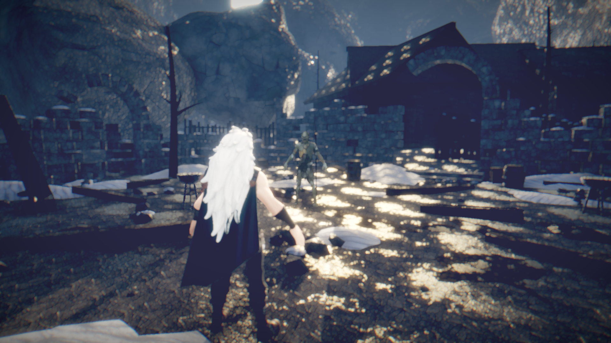
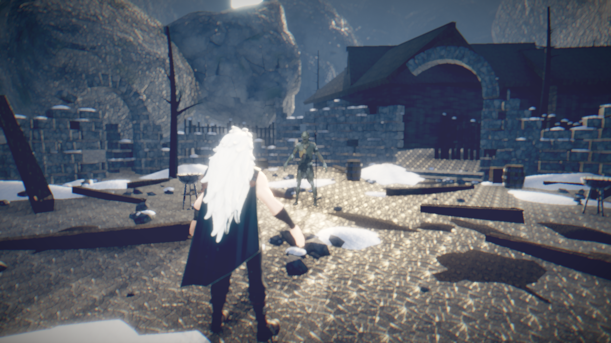
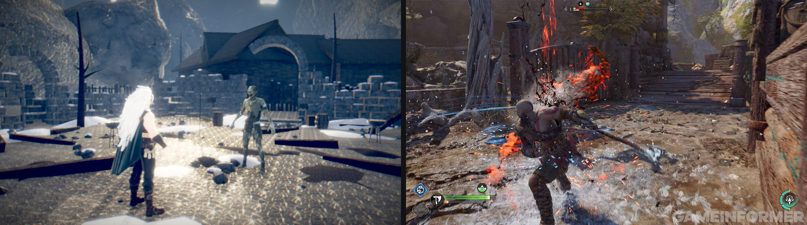

<meta charset=utf-8><meta http-equiv=refresh content=10>
<title>ClaudeOfWar — build progress</title><style>
*{box-sizing:border-box}
body{margin:0;background:#0b0d10;color:#e6e8eb;font:14px/1.55 ui-sans-serif,-apple-system,'SF Pro Text',system-ui,sans-serif}
a{color:#7dd3fc}
header{padding:22px 28px;border-bottom:1px solid #1c2027;position:sticky;top:0;background:#0b0d10ee;backdrop-filter:blur(8px);z-index:5}
h1{margin:0;font-size:19px;letter-spacing:.2px;font-weight:650}
.sub{color:#8b929c;font-size:12.5px;margin-top:5px}
.bar{display:flex;gap:5px;margin-top:14px;flex-wrap:wrap}
.pill{font-size:11px;padding:3px 9px;border-radius:999px;border:1px solid #262c35;color:#aab2bd;white-space:nowrap}
main{padding:22px 28px;max-width:1500px}
.piece{border:1px solid #1c2027;border-radius:11px;margin-bottom:16px;overflow:hidden;background:#0e1116}
.ph{display:flex;align-items:center;gap:11px;padding:13px 17px;background:#11151b;flex-wrap:wrap}
.dot{width:9px;height:9px;border-radius:50%;flex:none}
.pn{font-weight:640;font-size:14.5px}
.st{font-size:11px;text-transform:uppercase;letter-spacing:.7px;font-weight:640}
.rd{margin-left:auto;font-size:11.5px;color:#7c848f;font-variant-numeric:tabular-nums}
.pb{padding:15px 17px}
.gap{background:#17120f;border-left:2.5px solid #f59e0b;padding:9px 13px;border-radius:0 7px 7px 0;margin-bottom:13px;font-size:13px}
.gap b{color:#fbbf24;font-weight:620}
.win{background:#0d1710;border-left:2.5px solid #22c55e;padding:9px 13px;border-radius:0 7px 7px 0;margin-bottom:13px;font-size:13px}
.shots{display:grid;grid-template-columns:repeat(auto-fill,minmax(310px,1fr));gap:11px}
.shot{border:1px solid #1c2027;border-radius:8px;overflow:hidden;background:#080a0d}
.shot img{width:100%;display:block;aspect-ratio:16/9;object-fit:cover;background:#000}
.cap{padding:6px 9px;font-size:11px;color:#78808b;display:flex;justify-content:space-between;gap:8px}
.hist{margin-top:13px;border-top:1px solid #1a1e25;padding-top:11px}
.hr{display:flex;gap:11px;padding:6px 0;font-size:12.5px;border-bottom:1px solid #14181e;align-items:baseline}
.hr:last-child{border:0}
.hn{flex:none;width:56px;color:#69707a;font-variant-numeric:tabular-nums}
.hv{flex:none;width:70px;font-weight:640;font-size:11px}
.ht{color:#98a0ab}
.empty{color:#5d646e;font-size:12.5px;font-style:italic}
footer{padding:26px 28px;color:#5d646e;font-size:11.5px}
</style>
<header><h1>ClaudeOfWar</h1>
<div class=sub>Three.js r185 · WebGL2/ANGLE-Metal · postprocessing 6.39 + N8AO · 1920×1080 captures &nbsp;·&nbsp; target: God of War Ragnarök reference plates &nbsp;·&nbsp; <b>0/11</b> pieces have won a blind test</div>
<div class=bar>
<span class=pill style='border-color:#a855f744;color:#a855f7'>Render &amp; Post Stack · r11</span>
<span class=pill style='border-color:#a855f744;color:#a855f7'>Camera Rig &amp; Framing · r9</span>
<span class=pill style='border-color:#a855f744;color:#a855f7'>Environment &amp; Level Art · r11</span>
<span class=pill style='border-color:#a855f744;color:#a855f7'>Lighting &amp; Atmosphere · r11</span>
<span class=pill style='border-color:#f59e0b44;color:#f59e0b'>Hero Characters · r8</span>
<span class=pill style='border-color:#a855f744;color:#a855f7'>Zombie Enemies · r6</span>
<span class=pill style='border-color:#6b728044;color:#6b7280'>Animation &amp; Physics · r0</span>
<span class=pill style='border-color:#6b728044;color:#6b7280'>Combat Feel · r0</span>
<span class=pill style='border-color:#f59e0b44;color:#f59e0b'>VFX &amp; Impact · r10</span>
<span class=pill style='border-color:#6b728044;color:#6b7280'>HUD &amp; UI · r0</span>
<span class=pill style='border-color:#6b728044;color:#6b7280'>Audio · r0</span>
</div></header><main>
<div class=piece><div class=ph><span class=dot style='background:#a855f7'></span><span class=pn>Render &amp; Post Stack</span><span class=st style='color:#a855f7'>in review</span><span class=rd>round 11</span></div><div class=pb>
<div class=gap><b>Biggest remaining gap:</b> black_point 0.0855 vs band 0.005-0.060 — indirect fill still lifts the darkest 0.1% of the frame; nothing is genuinely dark.</div>
<div class=shots>
<div class=shot><a href='../shots/round11/arena_ots.png' target=_blank></a><div class=cap><span>arena OTS · macro variation wired</span><span>r11</span></div></div>
</div>
<div class=hist>
<div class=hr><span class=hn>r11</span><span class=hv style='color:#ef4444'>FAIL</span><span class=ht>6/7 objective gates pass; black_point is the last one out</span></div>
<div class=hr><span class=hn>r9</span><span class=hv style='color:#ef4444'>FAIL</span><span class=ht>grade reordered S-curve-&gt;lift-&gt;tint: sat_p95 1.000-&gt;0.55 (was the only outright band failure), pure_white 0.0024-&gt;0.00038</span></div>
<div class=hr><span class=hn>r7</span><span class=hv style='color:#ef4444'>FAIL</span><span class=ht>CRITIC: grade clipped red to zero on 7.58% of frame (ref 0.02%) — lift applied before the S-curve got mapped below zero and clamped</span></div>
<div class=hr><span class=hn>r6</span><span class=hv style='color:#ef4444'>FAIL</span><span class=ht>all 7 grade metrics now inside reference bands; split-tone working (shadows -0.157 cool / highs +0.051 warm)</span></div>
<div class=hr><span class=hn>r4</span><span class=hv style='color:#ef4444'>FAIL</span><span class=ht>261 silent shader compile errors — detail-normal injection referenced perturbNormal2Arb, removed in r185</span></div>
<div class=hr><span class=hn>r3</span><span class=hv style='color:#ef4444'>FAIL</span><span class=ht>exposure blown, hero framed dead-centre instead of left third</span></div>
<div class=hr><span class=hn>r1</span><span class=hv style='color:#ef4444'>FAIL</span><span class=ht>DOF blurred the entire frame incl. hero; focusDistance was normalised wrong</span></div>
</div>
</div></div>
<div class=piece><div class=ph><span class=dot style='background:#a855f7'></span><span class=pn>Camera Rig &amp; Framing</span><span class=st style='color:#a855f7'>in review</span><span class=rd>round 9</span></div><div class=pb>
<div class=shots>
<div class=shot><a href='../shots/round9/arena_ots.png' target=_blank></a><div class=cap><span>arena OTS · framing + grade fixed</span><span>r9</span></div></div>
</div>
<div class=hist>
<div class=hr><span class=hn>r9</span><span class=hv style='color:#ef4444'>FAIL</span><span class=ht>fixed: camera rides above the anchor. camY 1.69, tilt -5.6, area 24%. Art bible head band was my own bad estimate and was corrected against the plates.</span></div>
<div class=hr><span class=hn>r7</span><span class=hv style='color:#ef4444'>FAIL</span><span class=ht>CRITIC: pitch sign inverted — camera y=1.198 (band 1.50-1.75), tilt +2.12 UP (band -4 to -12), hero head at 0.198</span></div>
<div class=hr><span class=hn>r6</span><span class=hv style='color:#ef4444'>FAIL</span><span class=ht>OTS rig ported to JS; hero now left-third, enemy in right two-thirds per art bible</span></div>
</div>
</div></div>
<div class=piece><div class=ph><span class=dot style='background:#a855f7'></span><span class=pn>Environment &amp; Level Art</span><span class=st style='color:#a855f7'>in review</span><span class=rd>round 11</span></div><div class=pb>
<div class=gap><b>Biggest remaining gap:</b> Wet zones still throw a large blown specular field across the centre-right of the floor under the backlit sun.</div>
<div class=shots>
<div class=shot><a href='../shots/round11/arena_ots.png' target=_blank></a><div class=cap><span>arena OTS · macro variation wired</span><span>r11</span></div></div>
<div class=shot><a href='../shots/round7/blind_gow5_match.png' target=_blank></a><div class=cap><span>BLIND A/B vs Gow5.jpg — critic ID&#x27;d ours instantly</span><span>r7</span></div></div>
</div>
<div class=hist>
<div class=hr><span class=hn>r11</span><span class=hv style='color:#ef4444'>FAIL</span><span class=ht>wetRough 0.40 + tighter thresholds: pure_white back to 0.0018, contrast 0.80 -&gt; 0.635. 6 of 7 gates in band.</span></div>
<div class=hr><span class=hn>r10</span><span class=hv style='color:#ef4444'>FAIL</span><span class=ht>macro wired but wetRough 0.18 turned the ground into a mirror — pure_white 0.0004 -&gt; 0.0206 (54x regression)</span></div>
<div class=hr><span class=hn>r7</span><span class=hv style='color:#ef4444'>FAIL</span><span class=ht>CRITIC: ground is one tiling texture at one scale across 45% of frame; sunlit cobble luma 0.914 mirrors the sun into glitter</span></div>
<div class=hr><span class=hn>r6</span><span class=hv style='color:#ef4444'>FAIL</span><span class=ht>ported from Godot; 500k tris across 11 material-split GLBs, detail normals now compiling</span></div>
</div>
</div></div>
<div class=piece><div class=ph><span class=dot style='background:#a855f7'></span><span class=pn>Lighting &amp; Atmosphere</span><span class=st style='color:#a855f7'>in review</span><span class=rd>round 11</span></div><div class=pb>
<div class=gap><b>Biggest remaining gap:</b> Ambient fill trimmed (hemi 0.5-&gt;0.28, env 0.52-&gt;0.38) but black point still 0.0855.</div>
<div class=shots>
<div class=shot><a href='../shots/round11/arena_ots.png' target=_blank></a><div class=cap><span>arena OTS · macro variation wired</span><span>r11</span></div></div>
</div>
<div class=hist>
<div class=hr><span class=hn>r6</span><span class=hv style='color:#ef4444'>FAIL</span><span class=ht>swept 12 sun angles; el20/az205 backlit wins — long rakes, rim separation, sun flare</span></div>
<div class=hr><span class=hn>r5</span><span class=hv style='color:#ef4444'>FAIL</span><span class=ht>shadows appeared absent — arena is walled by tall rock, whole floor sat in shade at 17deg elevation</span></div>
</div>
</div></div>
<div class=piece><div class=ph><span class=dot style='background:#f59e0b'></span><span class=pn>Hero Characters</span><span class=st style='color:#f59e0b'>blocked</span><span class=rd>round 8</span></div><div class=pb>
<div class=gap><b>Biggest remaining gap:</b> Builder killed mid-task by a session limit. chars/ modules (index.js, shading.js, segment.js, atlas.js) on disk but NOT wired — last report said hair was aliasing into hard zebra stripes and it was rewriting with derivative-based filtering.</div>
<div class=shots>
<div class=shot><a href='../shots/round16/char_hero_closeup.png' target=_blank></a><div class=cap><span>hero close-up (Godot build)</span><span>r16</span></div></div>
</div>
<div class=hist>
<div class=hr><span class=hn>r16</span><span class=hv style='color:#ef4444'>FAIL</span><span class=ht>mesh + rig are good (83k tris, humanoid skeleton, 1 clip); texture atlas is the problem</span></div>
</div>
</div></div>
<div class=piece><div class=ph><span class=dot style='background:#a855f7'></span><span class=pn>Zombie Enemies</span><span class=st style='color:#a855f7'>in review</span><span class=rd>round 6</span></div><div class=pb>
<div class=gap><b>Biggest remaining gap:</b> Reads as a small green figure at distance; silhouette and material need work at combat range.</div>
<div class=shots>
<div class=shot><a href='../shots/round6/arena_ots.png' target=_blank></a><div class=cap><span>arena OTS · cold overcast</span><span>r6</span></div></div>
</div>
<div class=hist>
<div class=hr><span class=hn>r6</span><span class=hv style='color:#ef4444'>FAIL</span><span class=ht>draugr GLB ported and lit</span></div>
</div>
</div></div>
<div class=piece><div class=ph><span class=dot style='background:#6b7280'></span><span class=pn>Animation &amp; Physics</span><span class=st style='color:#6b7280'>queued</span><span class=rd>round 0</span></div><div class=pb>
<div class=empty>no captures yet</div>
</div></div>
<div class=piece><div class=ph><span class=dot style='background:#6b7280'></span><span class=pn>Combat Feel</span><span class=st style='color:#6b7280'>queued</span><span class=rd>round 0</span></div><div class=pb>
<div class=empty>no captures yet</div>
</div></div>
<div class=piece><div class=ph><span class=dot style='background:#f59e0b'></span><span class=pn>VFX &amp; Impact</span><span class=st style='color:#f59e0b'>blocked</span><span class=rd>round 10</span></div><div class=pb>
<div class=gap><b>Biggest remaining gap:</b> Builder was killed mid-task by a session limit. atmosphere.js (17KB) is on disk but NOT wired into main.js — dormant, not yet verified.</div>
<div class=empty>no captures yet</div>
<div class=hist>
<div class=hr><span class=hn>r7</span><span class=hv style='color:#ef4444'>FAIL</span><span class=ht>CRITIC: empty air + no near-camera occluder in any framing</span></div>
</div>
</div></div>
<div class=piece><div class=ph><span class=dot style='background:#6b7280'></span><span class=pn>HUD &amp; UI</span><span class=st style='color:#6b7280'>queued</span><span class=rd>round 0</span></div><div class=pb>
<div class=empty>no captures yet</div>
</div></div>
<div class=piece><div class=ph><span class=dot style='background:#6b7280'></span><span class=pn>Audio</span><span class=st style='color:#6b7280'>queued</span><span class=rd>round 0</span></div><div class=pb>
<div class=empty>no captures yet</div>
</div></div>
</main><footer>auto-refreshes every 10s · generated 12:30:45</footer>